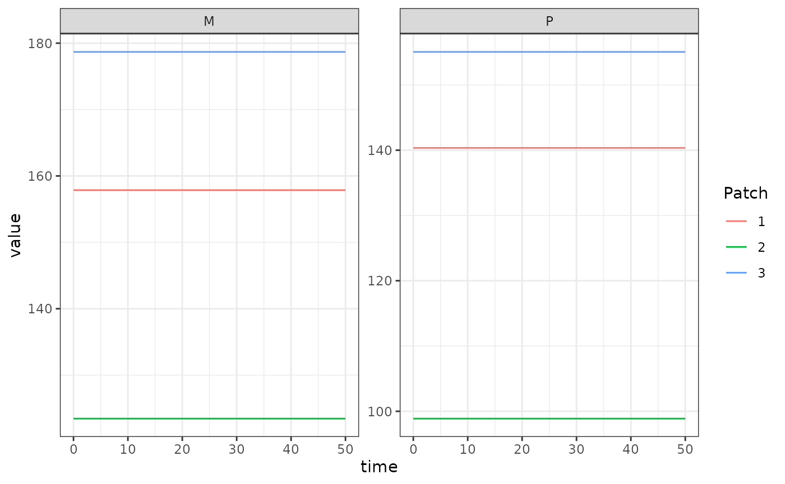

This is the null model of aquatic mosquito dynamics; there are no
endogenous dynamics and the model is simply specified by
Lambda, the rate at which adult mosquitoes spontaneously
emerge from aquatic habitats.
Below we show an example, taken from the package tests, of using the trace-based aquatic model to keep an adult mosquito model at equilibrium when using unequal numbers of aquatic habitats per patch.
We first calculate equilibrium values following the Ross-Macdonald vignette. We use \(\mathcal{N}\) and \(\mathcal{U}\) to describe how aquatic
habitats are dispersed amongst patches, and how mosquitoes in each patch
disperse eggs to each habitat, respectively. Please note because we have
unequal numbers of aquatic habitats and patches, we use
MASS::ginv to compute the generalized inverse of \(\mathcal{N}\) to get \(\alpha\) required at equilibrium.
nPatches <- 3
nHabitats <- 4
f <- 0.3
q <- 0.9
g <- 1/20
sigma <- 1/10
eip <- 11
nu <- 1/2
eggsPerBatch <- 30
calN <- matrix(0, nPatches, nHabitats)
calN[1,1] <- 1
calN[2,2] <- 1
calN[3,3] <- 1
calN[3,4] <- 1
calU <- matrix(0, nHabitats, nPatches)
calU[1,1] <- 1
calU[2,2] <- 1
calU[3:4,3] <- 0.5
calK <- matrix(0, nPatches, nPatches)
calK[1, 2:3] <- c(0.2, 0.8)
calK[2, c(1,3)] <- c(0.5, 0.5)
calK[3, 1:2] <- c(0.7, 0.3)
calK <- t(calK)
Omega <- make_Omega(g, sigma, calK, nPatches)
Upsilon <- expm::expm(-Omega * eip)
kappa <- c(0.1, 0.075, 0.025)
Lambda <- c(5, 10, 8)
# equilibrium solutions
Omega_inv <- solve(Omega)
M_eq <- as.vector(Omega_inv %*% Lambda)
P_eq <- as.vector(solve(diag(f, nPatches) + Omega) %*% diag(f, nPatches) %*% M_eq)
# the "Lambda" for the dLdt model
alpha <- as.vector(ginv(calN) %*% Lambda)Now we set up the model. Please see the Ross-Macdonald vignette for details on the
adult model. We use alpha as the Lambda
parameter of our forced emergence model, in
exDE::make_parameters_L_trace. Again, because we are not
running the full transmission model, we must use
exDE::MosquitoBehavior to pass the equilibrium values of
those bionomic parameters to exDE::xDE_diffeqn_mosy.
params = make_parameters_xde()
params$nPatches = nPatches
params$nHabitats = nHabitats
params$calU = calU
params$calN = calN
# ODE
params = make_parameters_L_trace(pars = params, Lambda = alpha)
params = make_parameters_MYZ_basicM(pars = params, g = g, sigma = sigma, calK = calK, f = f, q = q, nu = nu, eggsPerBatch = eggsPerBatch)
params = make_inits_MYZ_basicM(params, M_eq, P_eq)
params = make_indices(params)
y0 <- rep(0, params$max_ix)
y0[params$MYZpar$M_ix] <- M_eq
y0[params$MYZpar$P_ix] <- P_eq
out <- deSolve::ode(y = y0, times = 0:50, func = xDE_diffeqn_mosy, parms = params, method = 'lsoda')
colnames(out)[params$MYZpar$M_ix+1] <- paste0('M_', 1:params$nPatches)
colnames(out)[params$MYZpar$P_ix+1] <- paste0('P_', 1:params$nPatches)
out <- as.data.table(out)
out <- melt(out, id.vars = 'time')
out[, c("Component", "Patch") := tstrsplit(variable, '_', fixed = TRUE)]
out[, variable := NULL]
ggplot(data = out, mapping = aes(x = time, y = value, color = Patch)) +
geom_line() +
facet_wrap(. ~ Component, scales = 'free') +
theme_bw()